下表中列出游戏中全部国家。
点击地图可了解相应区域。
以区域划分
下面这张地图标注出了1444年11月11日开局时所有存在的国家。可以点击地图的部分区域了解这部分的区域与地区。
国家代码顺序
所有国家在EU4中被按照Tag识别。国家代码顺序（tag order）指定了在Tag之间用何种顺序决定行动[1]。
例如，如果 瑞典正在移动一支军队进入一个省份，那里有一支丹麦军队正在移动走，而且它们的移动都设置在同一天解决，瑞典将会赶上这支军队因为它们在顺序列表上被列在
瑞典正在移动一支军队进入一个省份，那里有一支丹麦军队正在移动走，而且它们的移动都设置在同一天解决，瑞典将会赶上这支军队因为它们在顺序列表上被列在 丹麦的前面。
丹麦的前面。
下文的国家代码列表，也记录了Tag顺序，以及粗略的分组。
动态国家代码
动态国家代码是为游戏中原本未存在国家自动生成的。格式为3个字符，首个字符为英文大写，基于国家类型（见下表）。后两位为数字， 按照先后生成顺序依次向后排列。就行动顺序而言，动态国家代码的国家最后行动。
下表列出动态国家代码类型的首字母及该类型后两位最大值[2]。
| 最大值 | 类型 | |
|---|---|---|
| D | 75 | |
| C | 75 | |
| K | 100 | 仆从国 |
| E | 50 | 阶级灾难分离出的国家 |
| T | 75 | 贸易联盟市 |
| O | 10 | 观察者（不出现在地图上） |
国家代码列表
图例：
- 可成立国家 - 若该国不存在可被成立。若被吞并可被他国再次成立。
 可被释放国家 - 该国在1444年拥有核心省份但无任何领土，需由他国或叛军放出。
可被释放国家 - 该国在1444年拥有核心省份但无任何领土，需由他国或叛军放出。 叛军成立国家 - 该国在1444年没有核心省份，他有小几率被叛军放出。
叛军成立国家 - 该国在1444年没有核心省份，他有小几率被叛军放出。
| 国家 | 英文国名 | Tag | 大体位置 | 备注 | |
|---|---|---|---|---|---|
| 1 | 叛军 | Rebels | REB | – | 特殊游戏 tag |
| 2 | 海盗 | Pirates | PIR | – | 特殊游戏 tag |
| 3 | 土著 | Natives | NAT | – | 特殊游戏 tag |
| 4 | 瑞典 | Sweden | SWE | 斯堪的纳维亚 | |
| 5 | 丹麦 | Denmark | DAN | 斯堪的纳维亚 | |
| 6 | 芬兰 | Finland | FIN | 斯堪的纳维亚 | |
| 7 | 哥得兰 | Gotland | GOT | 斯堪的纳维亚 | |
| 8 | 挪威 | Norway | NOR | 斯堪的纳维亚 | |
| 9 | 荷尔斯泰因 | Holstein | SHL | 斯堪的纳维亚 | |
| 10 | 斯堪的纳维亚 | Scandinavia | SCA | 斯堪的纳维亚 | 可成立 |
| 11 | 爱沙尼亚 | Estonia | EST | 斯堪的纳维亚 | |
| 12 | 利沃尼亚 | Livonia | LVA | 斯堪的纳维亚 | |
| 13 | 拉特加尔 | Latgalia | LTG | 东欧 | |
| 14 | 萨米 | Sapmi | SMI | 斯堪的纳维亚 | |
| 15 | 卡累利阿 | Karelia | KRL | 斯堪的纳维亚 | |
| 16 | 冰岛 | Iceland | ICE | 斯堪的纳维亚 | 可成立 / |
| 17 | 亚该亚 | Achaea | ACH | 巴尔干 | |
| 18 | 阿尔巴尼亚 | Albania | ALB | 巴尔干 | |
| 19 | 雅典 | Athens | ATH | 巴尔干 | |
| 20 | 波斯尼亚 | Bosnia | BOS | 巴尔干 | |
| 21 | 保加利亚 | Bulgaria | BUL | 巴尔干 | 可成立 / |
| 22 | 拜占庭 | Byzantium | BYZ | 巴尔干 | 可成立（存在于1444年） |
| 23 | 拉丁帝国 | Latin Empire | LAE | 巴尔干 | 可成立 |
| 24 | 科孚 | Corfu | CEP | 巴尔干 | |
| 25 | 克罗地亚 | Croatia | CRO | 巴尔干 | 可成立（存在于1444年） |
| 26 | 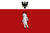 克里特 | Crete | CRT | 巴尔干 | |
| 27 | 塞浦路斯 | Cyprus | CYP | 小亚细亚 | |
| 28 | 达尔马提亚 | Dalmatia | DAL | 巴尔干 | 可成立 / |
| 29 | 伊庇鲁斯 | Epirus | EPI | 巴尔干 | |
| 30 | 希腊 | Greece | GRE | 巴尔干 | 可成立 |
| 31 | 医院骑士团 | The Knights | KNI | 小亚细亚 | |
| 32 | 摩里亚 | Morea | MOE | 巴尔干 | |
| 33 | 摩尔达维亚 | Moldavia | MOL | 巴尔干 | |
| 34 | 黑山 | Montenegro | MON | 巴尔干 | |
| 35 | 纳克索斯 | Naxos | NAX | 巴尔干 | |
| 36 | 拉古萨 | Ragusa | RAG | 巴尔干 | |
| 37 | 罗马尼亚 | Romania | RMN | 巴尔干 | 可成立 |
| 38 | 塞尔维亚 | Serbia | SER | 巴尔干 | |
| 39 | Transylvania | TRA | 巴尔干 | ||
| 40 | 瓦拉几亚 | Wallachia | WAL | 巴尔干 | |
| 41 | 匈牙利 | Hungary | HUN | 巴尔干 | |
| 42 | 尼特拉 | Nitra | SLO | 巴尔干 | |
| 43 | Ottomans | TUR | 小亚细亚 | ||
| 44 | 克兰里卡德 | Clanricarde | CNN | 不列颠诸岛 | |
| 45 | 康沃尔 | Cornwall | CRN | 不列颠诸岛 | |
| 46 | 英格兰 | England | ENG | 不列颠诸岛 | 可成立（存在于1444年） |
| 47 | 伦斯特 | Leinster | LEI | 不列颠诸岛 | |
| 48 | 爱尔兰 | Ireland | IRE | 不列颠诸岛 | 可成立 |
| 49 | 托蒙德 | Thomond | MNS | 不列颠诸岛 | |
| 50 | 苏格兰 | Scotland | SCO | 不列颠诸岛 | 可成立（存在于1444年） |
| 51 | 蒂龙 | Tyrone | TYR | 不列颠诸岛 | |
| 52 | 威尔士 | Wales | WLS | 不列颠诸岛 | |
| 53 | 诺森伯兰 | Northumberland | NOL | 不列颠诸岛 | |
| 54 | 大不列颠 | Great Britain | GBR | 不列颠诸岛 | 可成立 |
| 55 | 安茹王国 | Angevin Kingdom | AVE | 不列颠诸岛 | 可成立 |
| 56 | Meath | MTH | 不列颠诸岛 | ||
| 57 | 阿尔斯特 | Ulster | ULS | 不列颠诸岛 | |
| 58 | 德斯蒙德 | Desmond | DMS | 不列颠诸岛 | |
| 59 | 斯莱戈 | Sligo | SLN | 不列颠诸岛 | |
| 60 | 基尔代尔 | Kildare | KID | 不列颠诸岛 | |
| 61 | 盖尔 | Gaeldom | HSC | 不列颠诸岛 | |
| 62 | 奥蒙德 | Ormond | ORD | 不列颠诸岛 | |
| 63 | 蒂康奈尔 | Tyrconnell | TRY | 不列颠诸岛 | |
| 64 | 奥法利 | Offaly | FLY | 不列颠诸岛 | |
| 65 | 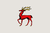 芒斯特 | Munster | MCM | 不列颠诸岛 | |
| 66 | 马恩 | Mann | KOI | 不列颠诸岛 | |
| 67 | 群岛 | The Isles | LOI | 不列颠诸岛 | |
| 68 | 东印度公司 | East India Company | EIC | 印度 | 可通过任务事件成立 |
| 69 | 巴西 | Brazil | BRZ | 殖民领 | 可成立 |
| 70 | 加拿大 | Canada | CAN | 殖民领 | 可成立 |
| 71 | 智利 | Chile | CHL | 殖民领 | 可成立 |
| 72 | 哥伦比亚 | Colombia | COL | 殖民领 | 可成立 |
| 73 | 海地 | Haiti | HAT | 殖民领 | 可成立 |
| 74 | 拉普拉塔 | La Plata | LAP | 殖民领 | 可成立 |
| 75 | 路易斯安那 | Louisiana | LOU | 殖民领 | 可成立 |
| 76 | 墨西哥 | Mexico | MEX | 殖民领 | 可成立 |
| 77 | 秘鲁 | Peru | PEU | 殖民领 | 可成立 |
| 78 | 巴拉圭 | Paraguay | PRG | 殖民领 | 可成立 |
| 79 | 魁北克 | Quebec | QUE | 殖民领 | 可成立 |
| 80 | 中美洲联邦 | United Central America | CAM | 殖民领 | 可成立 |
| 81 | 美利坚 | United States | USA | 殖民领 | 可成立 |
| 82 | 委内瑞拉 | Venezuela | VNZ | 殖民领 | 可成立 |
| 83 | 澳大利亚 | Australia | AUS | 殖民领 | 可成立 |
| 84 | 加利福尼亚 | California | CAL | 殖民领 | 可成立 |
| 85 | 得克萨斯 | Texas | TEX | 殖民领 | 可成立 |
| 86 | 卡斯卡迪亚 | Cascadia | CSC | 殖民领 | 可成立 |
| 87 | 阿拉斯加 | Alaska | ALA | 殖民领 | 可成立 |
| 88 | 西兰蒂亚 | Zealandia | NZL | 殖民领 | 可成立 |
| 89 | 伊利诺伊 | Illinois | ILI | 殖民领 | 可成立 |
| 90 | 佛罗里达 | Florida | FLO | 殖民领 | 可成立 |
| 91 | 佛蒙特 | Vermont | VRM | 殖民领 | 可成立 |
| 92 | 索诺拉 | Sonora | SNA | 殖民领 | 可成立 |
| 93 | 西印度群岛 | West Indies | WSI | 殖民领 | 可成立 |
| 94 | 古巴 | Cuba | CUB | 殖民领 | 可成立 |
| 95 | 但泽 | Danzig | DNZ | 东欧 | |
| 96 | Krakow | KRA | 东欧 | ||
| 97 | 立陶宛 | Lithuania | LIT | 东欧 | |
| 98 | 利沃尼亚骑士团 | Livonian Order | LIV | 东欧 | |
| 99 | 马佐夫舍 | Mazovia | MAZ | 东欧 | |
| 100 | 波兰 | Poland | POL | 东欧 | 可成立（存在于1444年） |
| 101 | 普鲁士 | Prussia | PRU | 东欧 | 可成立 |
| 102 | 库尔兰 | Kurland | KUR | 东欧 | 可成立 |
| 103 | 里加 | Riga | RIG | 东欧 | |
| 104 | 条顿骑士团 | Teutonic Order | TEU | 东欧 | |
| 105 | 波兰立陶宛联邦 | Commonwealth | PLC | 东欧 | 可成立 |
| 106 | Galicia–Volhynia | VOL | 东欧 | ||
| 107 | 基辅 | Kiev | KIE | 东欧 | |
| 108 | 切尔尼戈夫 | Chernigov | CHR | 东欧 | |
| 109 | Odoyev | OKA | 东欧 | ||
| 110 | 阿朗松 | Alençon | ALE | 法兰西 | |
| 111 | 斯特拉斯堡 | Strasbourg | ALS | 德意志 | |
| 112 | 阿马尼亚克 | Armagnac | AMG | 法兰西 | |
| 113 | 奥弗涅 | Auvergne | AUV | 法兰西 | |
| 114 | 阿维尼翁 | Avignon | AVI | 法兰西 | |
| 115 | 波旁 | Bourbonnais | BOU | 法兰西 | |
| 116 | Brittany | BRI | 法兰西 | ||
| 117 | 勃艮第 | Burgundy | BUR | 法兰西 | |
| 118 | 香槟 | Champagne | CHP | 法兰西 | |
| 119 | 科西嘉 | Corsica | COR | 意大利 | |
| 120 | 多菲内 | Dauphine | DAU | 法兰西 | |
| 121 | 富瓦 | Foix | FOI | 法兰西 | |
| 122 | 法兰西 | France | FRA | 法兰西 | 可成立（存在于1444年） |
| 123 | 加斯科涅 | Gascony | GUY | 法兰西 | |
| 124 | 讷韦尔 | Nevers | NEV | 法兰西 | |
| 125 | 诺曼底 | Normandy | NRM | 法兰西 | |
| 126 | Orleans | ORL | 法兰西 | ||
| 127 | Picardy | PIC | 法兰西 | ||
| 128 | 普罗旺斯 | Provence | PRO | 法兰西 | |
| 129 | 撒丁-皮埃蒙特 | Sardinia-Piedmont | SPI | 意大利 | 可成立 |
| 130 | 图卢兹 | Toulouse | TOU | 法兰西 | |
| 131 | 贝里 | Berry | BER | 法兰西 | |
| 132 | 亚琛 | Aachen | AAC | 德意志 | |
| 133 | Anhalt | ANH | 德意志 | ||
| 134 | 安斯巴赫 | Ansbach | ANS | 德意志 | |
| 135 | 奥格斯堡 | Augsburg | AUG | 德意志 | |
| 136 | 巴登 | Baden | BAD | 德意志 | |
| 137 | 巴伐利亚 | Bavaria | BAV | 德意志 | 可成立 |
| 138 | 波希米亚 | Bohemia | BOH | 东欧 | |
| 139 | 勃兰登堡 | Brandenburg | BRA | 德意志 | |
| 140 | 不来梅 | Bremen | BRE | 德意志 | |
| 141 | 不伦瑞克 | Brunswick | BRU | 德意志 | |
| 142 | 东弗里斯兰 | East Frisia | EFR | 德意志 | |
| 143 | 法兰克福 | Frankfurt | FRN | 德意志 | |
| 144 | Germany | GER | 德意志 | 可成立 | |
| 145 | 奥地利 | Austria | HAB | 德意志 | 可成立（存在于1444年） |
| 146 | 汉堡 | Hamburg | HAM | 德意志 | |
| 147 | 汉诺威 | Hanover | HAN | 德意志 | 可成立 |
| 148 | 黑森 | Hesse | HES | 德意志 | |
| 149 | Holy Roman Empire | HLR | 德意志 | 可成立 | |
| 150 | 克莱沃 | Cleves | KLE | 德意志 | |
| 151 | 科隆 | Cologne | KOL | 德意志 | |
| 152 | 萨克森-劳恩堡 | Saxe-Lauenburg | LAU | 德意志 | |
| 153 | 洛林 | Lorraine | LOR | 法兰西 | |
| 154 | Lüneburg | LUN | 德意志 | ||
| 155 | 马格德堡 | Magdeburg | MAG | 德意志 | |
| 156 | 美因茨 | Mainz | MAI | 德意志 | |
| 157 | 迈森 | Meissen | MEI | 德意志 | |
| 158 | 梅克伦堡 | Mecklenburg | MKL | 德意志 | |
| 159 | Münster | MUN | 德意志 | ||
| 160 | Moravia | MVA | 东欧 | ||
| 161 | 奥尔登堡 | Oldenburg | OLD | 德意志 | |
| 162 | 普法尔茨 | The Palatinate | PAL | 德意志 | |
| 163 | 波美拉尼亚 | Pomerania | POM | 德意志 | 可成立 |
| 164 | 萨克森 | Saxony | SAX | 德意志 | 可成立（存在于1444年） |
| 165 | 西里西亚 | Silesia | SIL | 东欧 | 可成立 |
| 166 | 萨尔茨堡 | Salzburg | SLZ | 德意志 | |
| 167 | 施蒂里亚 | Styria | STY | 德意志 | |
| 168 | 瑞士 | Switzerland | SWI | 德意志 | 可成立（存在于1444年） |
| 169 | 图林根 | Thuringia | THU | 德意志 | |
| 170 | 蒂罗尔 | Tirol | TIR | 德意志 | |
| 171 | Trier | TRI | 德意志 | ||
| 172 | 乌尔姆 | Ulm | ULM | 德意志 | |
| 173 | 维尔茨堡 | Wurzburg | WBG | 德意志 | |
| 174 | 威斯特伐利亚 | Westphalia | WES | 德意志 | 可成立 |
| 175 | 符腾堡 | Wurttemberg | WUR | 德意志 | |
| 176 | 纽伦堡 | Nuremberg | NUM | 德意志 | |
| 177 | 梅明根 | Memmingen | MEM | 德意志 | |
| 178 | 费尔登 | Verden | VER | 德意志 | |
| 179 | 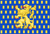 拿骚 | Nassau | NSA | 德意志 | |
| 180 | 多特蒙德 | Dortmund | RVA | 德意志 | |
| 181 | 迪特马尔申 | Dithmarschen | DTT | 德意志 | |
| 182 | Aragon | ARA | 伊比利亚 | ||
| 183 | 卡斯蒂利亚 | Castile | CAS | 伊比利亚 | |
| 184 | 加泰罗尼亚 | Catalonia | CAT | 伊比利亚 | |
| 185 | 格拉纳达 | Granada | GRA | 伊比利亚 | |
| 186 | 纳瓦拉 | Navarra | NAV | 伊比利亚 | |
| 187 | 葡萄牙 | Portugal | POR | 伊比利亚 | |
| 188 | 西班牙 | Spain | SPA | 伊比利亚 | 可成立 |
| 189 | 加利西亚 | Galicia | GAL | 伊比利亚 | |
| 190 | 莱昂 | León | LON | 伊比利亚 | |
| 191 | 安达卢西亚 | Andalusia | ADU | 伊比利亚 | 可成立 |
| 192 | 巴伦西亚 | Valencia | VAL | 伊比利亚 | |
| 193 | Asturias | ASU | 伊比利亚 | ||
| 194 | 马略卡 | Majorca | MJO | 伊比利亚 | |
| 195 | 阿奎莱亚 | Aquileia | AQU | 意大利 | |
| 196 | 伊特鲁里亚 | Etruria | ETR | 意大利 | |
| 197 | 费拉拉 | Ferrara | FER | 意大利 | |
| 198 | 热那亚 | Genoa | GEN | 意大利 | |
| 199 | 意大利 | Italy | ITA | 意大利 | 可成立 |
| 200 | Mantua | MAN | 意大利 | ||
| 201 | 米兰 | Milan | MLO | 意大利 | |
| 202 | Modena | MOD | 意大利 | ||
| 203 | 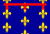 那不勒斯 | Naples | NAP | 意大利 | |
| 204 | 教宗国 | The Papal State | PAP | 意大利 | |
| 205 | 帕尔马 | Parma | PAR | 意大利 | |
| 206 | 比萨 | Pisa | PIS | 意大利 | |
| 207 | 撒丁 | Sardinia | SAR | 意大利 | |
| 208 | 萨伏依 | Savoy | SAV | 意大利 | |
| 209 | 西西里 | Sicily | SIC | 意大利 | |
| 210 | 锡耶纳 | Siena | SIE | 意大利 | |
| 211 | 托斯卡纳 | Tuscany | TUS | 意大利 | 可成立 |
| 212 | 乌尔比诺 | Urbino | URB | 意大利 | |
| 213 | 威尼斯 | Venice | VEN | 意大利 | |
| 214 | 蒙费拉托 | Montferrat | MFA | 意大利 | |
| 215 | 卢卡 | Lucca | LUC | 意大利 | |
| 216 | 佛罗伦萨 | Florence | LAN | 意大利 | |
| 217 | 马耳他 | Malta | JAI | 意大利 | |
| 218 | 布拉班特 | Brabant | BRB | 低地国家 | |
| 219 | 佛兰德 | Flanders | FLA | 低地国家 | |
| 220 | 弗里斯兰 | Friesland | FRI | 低地国家 | |
| 221 | 海尔雷 | Gelre | GEL | 低地国家 | |
| 222 | 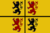 埃诺 | Hainaut | HAI | 低地国家 | |
| 223 | 荷兰 | Holland | HOL | 低地国家 | |
| 224 | 列日 | Liege | LIE | 低地国家 | |
| 225 | 卢森堡 | Luxembourg | LUX | 低地国家 | |
| 226 | 尼德兰 | Netherlands | NED | 低地国家 | 可成立 / 由事件出现 |
| 227 | 乌得勒支 | Utrecht | UTR | 低地国家 | |
| 228 | 亚美尼亚 | Armenia | ARM | 高加索 | 可成立 / |
| 229 | 阿斯特拉罕 | Astrakhan | AST | 高加索 | |
| 230 | 克里米亚 | Crimea | CRI | 东欧 | |
| 231 | 格鲁吉亚 | Georgia | GEO | 高加索 | 可成立（存在于1444年） |
| 232 | 喀山 | Kazan | KAZ | 俄罗斯 | |
| 233 | 莫斯科 | Muscovy | MOS | 俄罗斯 | |
| 234 | 诺夫哥罗德 | Novgorod | NOV | 俄罗斯 | |
| 235 | 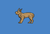 普斯科夫 | Pskov | PSK | 俄罗斯 | |
| 236 | 卡西姆 | Qasim | QAS | 俄罗斯 | |
| 237 | 俄罗斯 | Russia | RUS | 俄罗斯 | 可成立 |
| 238 | 梁赞 | Ryazan | RYA | 俄罗斯 | |
| 239 | 特维尔 | Tver | TVE | 俄罗斯 | |
| 240 | Ruthenia | UKR | 东欧 | 可成立 | |
| 241 | 雅罗斯拉夫尔 | Yaroslavl | YAR | 俄罗斯 | |
| 242 | 扎波罗热 | Zaporozhie | ZAZ | 东欧 | |
| 243 | 诺盖 | Nogai | NOG | 中亚 | |
| 244 | 西伯利亚 | Sibir | SIB | 俄罗斯 | |
| 245 | 波洛茨克 | Polotsk | PLT | 东欧 | |
| 246 | 彼尔姆 | Perm | PRM | 俄罗斯 | |
| 247 | 狄奥多罗 | Theodoro | FEO | 东欧 | |
| 248 | 巴什基尔 | Bashkiria | BSH | 俄罗斯 | |
| 249 | 别洛奥泽罗 | Beloozero | BLO | 俄罗斯 | |
| 250 | 罗斯托夫 | Rostov | RSO | 俄罗斯 | |
| 251 | 大帐 | Great Horde | GOL | 俄罗斯 | |
| 252 | 金帐 | Golden Horde | GLH | 俄罗斯 | 可成立 |
| 253 | 亚丁 | Aden | ADE | 阿拉伯 | |
| 254 | 哈萨 | Haasa | ALH | 阿拉伯 | |
| 255 | 阿尼扎 | Anizah | ANZ | 阿拉伯 | |
| 256 | 阿拉伯 | Arabia | ARB | 阿拉伯 | 可成立 |
| 257 | 阿达兰 | Ardalan | ARD | 阿拉伯 | |
| 258 | 索兰 | Soran | BHT | 阿拉伯 | |
| 259 | 代瓦西尔 | Dawasir | DAW | 阿拉伯 | |
| 260 | 埃雷特纳 | Eretna | ERE | 阿拉伯 | |
| 261 | 法德勒 | Fadl | FAD | 阿拉伯 | |
| 262 | 格尔米扬 | Germiyan | GRM | 小亚细亚 | |
| 263 | 哈德拉毛 | Hadramut | HDR | 阿拉伯 | |
| 264 | 汉志 | Hejaz | HED | 阿拉伯 | |
| 265 | 黎巴嫩 | Lebanon | LEB | 阿拉伯 | |
| 266 | 马库里亚 | Makuria | MAK | 阿拉伯 | |
| 267 | 麦地那 | Medina | MDA | 阿拉伯 | |
| 268 | 米克利夫 | Mikhlaf | MFL | 阿拉伯 | |
| 269 | 迈赫拉 | Mahra | MHR | 阿拉伯 | |
| 270 | 内志 | Najd | NAJ | 阿拉伯 | |
| 271 | 奈季兰 | Najran | NJR | 阿拉伯 | |
| 272 | 阿曼 | Oman | OMA | 阿拉伯 | |
| 273 | 拉西 | Rassids | RAS | 阿拉伯 | |
| 274 | 舍迈尔 | Shammar | SHM | 阿拉伯 | |
| 275 | 沙迦 | Sharjah | SHR | 阿拉伯 | |
| 276 | 希尔凡 | Shirvan | SRV | 阿拉伯 | |
| 277 | 亚斯 | Yas | YAS | 阿拉伯 | |
| 278 | 也门 | Yemen | YEM | 阿拉伯 | 可成立（存在于1444年） |
| 279 | 哈桑凯伊夫 | Hisn Kayfa | HSN | 阿拉伯 | |
| 280 | 比特利斯 | Bitlis | BTL | 阿拉伯 | |
| 281 | 白羊 | Aq Qoyunlu | AKK | 小亚细亚 | |
| 282 | 艾登 | Aydin | AYD | 小亚细亚 | |
| 283 | 詹达尔 | Candar | CND | 小亚细亚 | |
| 284 | 杜勒卡迪尔 | Dulkadir | DUL | 小亚细亚 | |
| 285 | 伊拉克 | Iraq | IRQ | 小亚细亚 | |
| 286 | 卡拉曼 | Karaman | KAR | 小亚细亚 | |
| 287 | 叙利亚 | Syria | SYR | 中东 | |
| 288 | 特拉比松 | Trebizond | TRE | 小亚细亚 | |
| 289 | 萨鲁汗 | Saruhan | SRU | 小亚细亚 | |
| 290 | 门泰谢 | Mentese | MEN | 小亚细亚 | |
| 291 | 拉玛赞 | Ramazan | RAM | 小亚细亚 | |
| 292 | 阿瓦尔 | Avaria | AVR | 小亚细亚 | |
| 293 | 卡拉巴赫 | Karabakh | MLK | 小亚细亚 | |
| 294 | 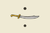 萨姆茨赫 | Samtskhe | SME | 小亚细亚 | |
| 295 | 阿尔达比勒 | Ardabil | ARL | 小亚细亚 | |
| 296 | 穆沙沙 | Mushasha | MSY | 小亚细亚 | |
| 297 | Rûm | RUM | 小亚细亚 | 可成立 | |
| 298 | 阿尔及尔 | Algiers | ALG | 马格里布 | 可成立 / |
| 299 | 非斯 | Fez | FEZ | 马格里布 | |
| 300 | 马穆鲁克 | Mamluks | MAM | 中东 | 可成立（存在于1444年） |
| 301 | 摩洛哥 | Morocco | MOR | 马格里布 | 可成立（存在于1444年） |
| 302 | 的黎波里 | Tripoli | TRP | 马格里布 | 可成立 / |
| 303 | 突尼斯 | Tunis | TUN | 马格里布 | 可成立（存在于1444年） |
| 304 | 埃及 | Egypt | EGY | 中东 | 可成立 |
| 305 | 卡比利亚 | Kabylia | KBA | 马格里布 | |
| 306 | 塔菲拉勒特 | Tafilalt | TFL | 马格里布 | |
| 307 | 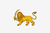 苏斯 | Sus | SOS | 马格里布 | |
| 308 | 特莱姆森 | Tlemcen | TLC | 马格里布 | |
| 309 | 图古尔特 | Touggourt | TGT | 马格里布 | |
| 310 | 杰里德 | Djerid | GHD | 马格里布 | |
| 311 | 费赞 | Fezzan | FZA | 马格里布 | |
| 312 | 姆扎卜 | Mzab | MZB | 马格里布 | |
| 313 | Salé | SLE | 马格里布 | 由事件出现 | |
| 314 | Tétouan | TET | 马格里布 | ||
| 315 | 马拉喀什 | Marrakesh | MRK | 马格里布 | |
| 316 | 哈萨克 | Kazakh | KZH | 中亚 | |
| 317 | 希瓦 | Khiva | KHI | 中亚 | |
| 318 | 乌兹别克 | Uzbek | SHY | 中亚 | |
| 319 | Ferghana | KOK | 中亚 | ||
| 320 | 布哈拉 | Bukhara | BUK | 中亚 | 可成立 |
| 321 | 阿富汗 | Afghanistan | AFG | 波斯 | |
| 322 | Khorasan | KHO | 波斯 | ||
| 323 | 波斯 | Persia | PER | 波斯 | 可成立 |
| 324 | 黑羊 | Qara Qoyunlu | QAR | 波斯 | |
| 325 | 帖木儿 | Timurids | TIM | 波斯 | 可成立（存在于1444年） |
| 326 | 河中 | Transoxiana | TRS | 波斯 | |
| 327 | 吉兰 | Gilan | KRY | 波斯 | |
| 328 | 切尔克西亚 | Circassia | CIR | 波斯 | |
| 329 | 加齐库穆赫 | Gazikumukh | GAZ | 波斯 | |
| 330 | Imereti | IME | 高加索 | ||
| 331 | 马赞德兰 | Mazandaran | TAB | 波斯 | |
| 332 | 霍尔木兹 | Hormuz | ORM | 波斯 | |
| 333 | 洛雷斯坦 | Luristan | LRI | 波斯 | |
| 334 | 锡斯坦 | Sistan | SIS | 波斯 | |
| 335 | 比阿普斯 | Biapas | BPI | 波斯 | |
| 336 | 法尔斯 | Fars | FRS | 波斯 | |
| 337 | 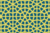 克尔曼 | Kerman | KRM | 波斯 | |
| 338 | 亚兹德 | Yazd | YZD | 波斯 | |
| 339 | 伊斯法罕 | Isfahan | ISF | 波斯 | |
| 340 | 大不里士 | Tabriz | TBR | 波斯 | |
| 341 | 巴士拉 | Basra | BSR | 波斯 | |
| 342 | 马拉盖 | Maregheh | MGR | 波斯 | |
| 343 | 阿贾姆 | Ajam | QOM | 波斯 | |
| 344 | 阿兹特克 | Aztec | AZT | 中美洲 | |
| 345 | 切罗基 | Cherokee | CHE | 北美洲 | |
| 346 | 奇穆 | Chimu | CHM | 南美洲 | |
| 347 | 克里克 | Creek | CRE | 北美洲 | 可通过部落联盟成立 |
| 348 | 休伦 | Huron | HUR | 北美洲 | 可通过部落联盟成立 |
| 349 | 印加 | Inca | INC | 南美洲 | 可成立 |
| 350 | 易洛魁 | Iroquois | IRO | 北美洲 | 可通过部落联盟成立 |
| 351 | 玛雅 | Maya | MAY | 中美洲 | 可成立 |
| 352 | Shawnee | SHA | 北美洲 | 可通过部落联盟成立 | |
| 353 | 萨波特克 | Zapotec | ZAP | 中美洲 | |
| 354 | 阿散蒂 | Ashanti | ASH | 西非 | |
| 355 | 贝宁 | Benin | BEN | 西非 | |
| 356 | 埃塞俄比亚 | Ethiopia | ETH | 东非 | 可成立（存在于1444年） |
| 357 | 刚果 | Kongo | KON | 刚果 | 可成立（存在于1444年） |
| 358 | 马里 | Mali | MAL | 西非 | 可成立（存在于1444年） |
| 359 | 芬吉 | Funj | NUB | 西非 | |
| 360 | 桑海 | Songhai | SON | 西非 | |
| 361 | 基尔瓦 | Kilwa | ZAN | 东非 | |
| 362 | Mutapa | ZIM | 东非 | ||
| 363 | 阿达尔 | Adal | ADA | 东非 | |
| 364 | 豪萨 | Hausa | HAU | 西非 | 可成立 / |
| 365 | 卡奈姆-博尔努 | Kanem Bornu | KBO | 西非 | |
| 366 | 卢安果 | Loango | LOA | 刚果 | |
| 367 | 奥约 | Oyo | OYO | 西非 | |
| 368 | 塞古 | Segu | SOF | 西非 | |
| 369 | 索科托 | Sokoto | SOK | 西非 | 可成立 |
| 370 | 卓洛夫 | Jolof | JOL | 西非 | |
| 371 | 索法拉 | Sofala | SFA | 东非 | |
| 372 | 蒙巴萨 | Mombasa | MBA | 东非 | |
| 373 | 马林迪 | Malindi | MLI | 东非 | |
| 374 | 阿朱兰 | Ajuuraan | AJU | 东非 | |
| 375 | 摩加迪沙 | Mogadishu | MDI | 东非 | |
| 376 | 伊那瑞亚 | Ennarea | ENA | 东非 | |
| 377 | 瓦加杜古 | Wagadugu | WGD | 西非 | |
| 378 | 赞多马 | Zandoma | ZND | 西非 | |
| 379 | Fada N'gourma | GUR | 西非 | ||
| 380 | 滕科多戈 | Tenkodogo | TEN | 西非 | |
| 381 | 欧加登 | Ogaadeen | OGD | 东非 | |
| 382 | 祖鲁 | Zulu | ZUL | 东非 | 由事件出现 |
| 383 | 索马里 | Somalia | SOM | 东非 | 可成立 |
| 384 | 阿克苏姆 | Aksum | AKS | 东非 | 可成立 |
| 385 | 津巴布韦 | Zimbabwe | GZI | 东非 | 可成立 |
| 386 | 努比亚 | Nubia | NBI | 东非 | 可成立 |
| 387 | 罗兹维帝国 | Rozwi Empire | RZI | 东非 | 可成立 |
| 388 | 基塔拉 | Kitara | KIT | 中非 | 可成立 |
| 389 | 瓦达伊 | Wadai | WAD | 西非 | |
| 390 | 奥萨 | Aussa | AFA | 东非 | |
| 391 | 阿洛迪亚 | Alodia | ALO | 东非 | |
| 392 | 达尔富尔 | Darfur | DAR | 东非 | |
| 393 | 格勒迪 | Geledi | GLE | 东非 | |
| 394 | 哈勒尔 | Harar | HAR | 东非 | |
| 395 | 霍比奥 | Hobyo | HOB | 东非 | |
| 396 | 咖法 | Kaffa | KAF | 东非 | |
| 397 | 梅德利巴赫里 | Medri Bahri | MED | 东非 | |
| 398 | 马吉尔廷 | Majeerteen | MJE | 东非 | |
| 399 | 马雷汉 | Marehan | MRE | 东非 | |
| 400 | Pate | PTE | 东非 | ||
| 401 | 瓦尔桑盖利 | Warsangali | WAR | 东非 | |
| 402 | 塞米恩 | Semien | BTI | 东非 | |
| 403 | 贝扎 | Beja | BEJ | 东非 | |
| 404 | 吉马 | Jimma | JIM | 东非 | |
| 405 | 瓦莱提 | Welayta | WLY | 东非 | |
| 406 | 达莫特 | Damot | DAM | 东非 | |
| 407 | Hadiya | HDY | 东非 | ||
| 408 | 绍阿 | Shewa | SOA | 东非 | |
| 409 | 詹吉罗 | Janjiro | JJI | 东非 | |
| 410 | 栋古拉 | Dongola | ABB | 东非 | |
| 411 | 特约 | Tyo | TYO | 刚果 | |
| 412 | 索约 | Soyo | SYO | 刚果 | |
| 413 | 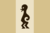 卡桑吉 | Kasanje | KSJ | 刚果 | |
| 414 | 卢巴 | Luba | LUB | 中非 | |
| 415 | 隆达 | Lunda | LND | 刚果 | |
| 416 | 绍奎 | Chokwe | CKW | 中非 | |
| 417 | 基孔贾 | Kikondja | KIK | 中非 | |
| 418 | 卡曾贝 | Kazembe | KZB | 中非 | |
| 419 | 雅卡 | Yaka | YAK | 刚果 | |
| 420 | 卡隆兑 | Kalundwe | KLD | 中非 | |
| 421 | 库巴 | Kuba | KUB | 中非 | |
| 422 | 卢旺达 | Rwanda | RWA | 中非 | |
| 423 | 布隆迪 | Burundi | BUU | 中非 | |
| 424 | 布干达 | Buganda | BUG | 中非 | |
| 425 | 安科莱 | Nkore | NKO | 中非 | |
| 426 | 卡拉圭 | Karagwe | KRW | 中非 | |
| 427 | Bunyoro | BNY | 中非 | ||
| 428 | 布索加 | Busoga | BSG | 中非 | |
| 429 | Buha | UBH | 中非 | ||
| 430 | 马拉维 | Maravi | MRA | 东非 | |
| 431 | 隆杜 | Lundu | LDU | 东非 | |
| 432 | 通布卡 | Tumbuka | TBK | 东非 | |
| 433 | 马库阿 | Makua | MKU | 东非 | |
| 434 | 布图阿 | Butua | RZW | 东非 | |
| 435 | 梅里纳 | Imerina | MIR | 马达加斯加 | |
| 436 | 萨卡拉瓦 | Sakalava | SKA | 马达加斯加 | |
| 437 | 贝齐米萨拉卡 | Betsimisaraka | BTS | 马达加斯加 | |
| 438 | 马哈法利 | Mahafaly | MFY | 马达加斯加 | |
| 439 | 安泰莫罗 | Antemoro | ANT | 马达加斯加 | |
| 440 | 安南 | Annam | ANN | 中南 | |
| 441 | 阿拉干 | Arakan | ARK | 中南 | |
| 442 | 亚齐 | Aceh | ATJ | 东印度 | |
| 443 | Ayutthaya | AYU | 中南 | ||
| 444 | 巴厘 | Bali | BLI | 东印度 | |
| 445 | 万丹 | Banten | BAN | 东印度 | |
| 446 | 文莱 | Brunei | BEI | 东印度 | |
| 447 | 占婆 | Champa | CHA | 东印度 | |
| 448 | 察合台 | Chagatai | CHG | 蒙古 | |
| 449 | 占巴塞 | Champasak | CHK | 中南 | |
| 450 | 大越 | Dai Viet | DAI | 中南 | 可成立（存在于1444年） |
| 451 | 日本 | Japan | JAP | 远东 | 可成立 |
| 452 | 尼子家 | Amago | AMA | 远东 | |
| 453 | 朝仓家 | Asakura | ASA | 远东 | |
| 454 | 长宗我部家 | Chosokabe | CSK | 远东 | |
| 455 | 伊达家 | Date | DTE | 远东 | |
| 456 | 北条家 | Hojo | HJO | 远东 | |
| 457 | 细川家 | Hosokawa | HSK | 远东 | |
| 458 | 畠山家 | Hatakeyama | HTK | 远东 | |
| 459 | 池田家 | Ikeda | IKE | 远东 | |
| 460 | Imagawa | IMG | 远东 | ||
| 461 | 前田家 | Maeda | MAE | 远东 | |
| 462 | 毛利家 | Mori | MRI | 远东 | |
| 463 | 织田家 | Oda | ODA | 远东 | |
| 464 | 大友家 | Otomo | OTM | 远东 | |
| 465 | Ouchi | OUC | 远东 | ||
| 466 | 斯波家 | Shiba | SBA | 远东 | |
| 467 | Shimazu | SMZ | 远东 | ||
| 468 | 武田家 | Takeda | TKD | 远东 | |
| 469 | 德川家 | Tokugawa | TKG | 远东 | |
| 470 | 上杉家 | Uesugi | UES | 远东 | |
| 471 | 山名家 | Yamana | YMN | 远东 | |
| 472 | 南部家 | Nanbu | RFR | 远东 | |
| 473 | 足利家 | Ashikaga | ASK | 远东 | |
| 474 | 北畠家 | Kitabatake | KTB | 远东 | |
| 475 | 阿伊努 | Ainu | ANU | 远东 | |
| 476 | 赤松家 | Akamatsu | AKM | 远东 | |
| 477 | 安东家 | Ando | AKT | 远东 | |
| 478 | 千叶家 | Chiba | CBA | 远东 | |
| 479 | 一色家 | Isshiki | ISK | 远东 | |
| 480 | Ito | ITO | 远东 | ||
| 481 | 菊池家 | Kikuchi | KKC | 远东 | |
| 482 | 河野家 | Kono | KNO | 远东 | |
| 483 | 小笠原家 | Ogasawara | OGS | 远东 | |
| 484 | 少贰家 | Shoni | SHN | 远东 | |
| 485 | 佐竹家 | Satake | STK | 远东 | |
| 486 | 土岐家 | Toki | TKI | 远东 | |
| 487 | 宇都宫家 | Utsunomiya | UTN | 远东 | |
| 488 | 筒井家 | Tsutsui | TTI | 远东 | |
| 489 | 蒙古 | Mongolia | KHA | 蒙古 | |
| 490 | 高棉 | Khmer | KHM | 中南 | |
| 491 | 朝鲜 | Korea | KOR | 远东 | |
| 492 | 兰纳 | Lan Na | LNA | 中南 | |
| 493 | 琅勃拉邦 | Luang Prabang | LUA | 中南 | |
| 494 | 澜沧 | Lan Xang | LXA | 中南 | 可成立（存在于1444年） |
| 495 | 满者伯夷 | Majapahit | MAJ | 东印度 | |
| 496 | 满洲 | Manchu | MCH | 满洲 | 可成立 |
| 497 | 望加锡 | Makassar | MKS | 东印度 | |
| 498 | 马六甲 | Malacca | MLC | 东印度 | |
| 499 | 大明 | Ming | MNG | 中国 | |
| 500 | 马塔兰 | Mataram | MTR | 东印度 | |
| 501 | 瓦剌 | Oirat | OIR | 蒙古 | |
| 502 | 北大年 | Pattani | PAT | 东印度 | |
| 503 | 勃固 | Pegu | PEG | 中南 | |
| 504 | 大清 | Qing | QNG | 满洲 | 可成立 |
| 505 | 琉球 | Ryukyu | RYU | 远东 | |
| 506 | 掸邦 | Shan | SST | 中南 | 可成立 |
| 507 | 素可泰 | Sukhothai | SUK | 中南 | |
| 508 | 苏禄 | Sulu | SUL | 东印度 | |
| 509 | 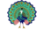 东吁 | Taungu | TAU | 中南 | |
| 510 | 吐蕃 | Tibet | TIB | 西藏 | 可成立 |
| 511 | 东京 | Tonkin | TOK | 中南 | |
| 512 | 万象 | Vientiane | VIE | 中南 | |
| 513 | 周 | Zhou | CZH | 中国 | |
| 514 | Shun | CSH | 中国 | ||
| 515 | 大西 | Xi | CXI | 中国 | |
| 516 | 大元 | Yuan | YUA | 蒙古 | 可成立 |
| 517 | 东宁 | Tungning | FRM | 中国 | 由事件出现 |
| 518 | Ilkhanate | ILK | 波斯 | 可成立 | |
| 519 | 卡尔梅克 | Kalmyk | KLM | 东欧大草原 | 由事件出现 |
| 520 | 蒙古帝国 | Mongol Empire | MGE | 蒙古 | 可成立 |
| 521 | 宗家 | So | SOO | 远东 | |
| 522 | 尼夫赫 | Nivkh | NVK | 满洲 | |
| 523 | 索伦 | Solon | SOL | 满洲 | |
| 524 | 赫哲 | Donghai | EJZ | 满洲 | |
| 525 | 鄂罗奇 | Udege | NHX | 满洲 | |
| 526 | 锡伯 | Yeren | MYR | 满洲 | |
| 527 | 海西女真 | Haixi | MHX | 满洲 | |
| 528 | 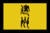 建州女真 | Jianzhou | MJZ | 满洲 | |
| 529 | 科尔沁 | Korchin | KRC | 蒙古 | |
| 530 | 喀尔喀 | Khalkha | KLK | 蒙古 | |
| 531 | 哈密 | Kara Del | HMI | 蒙古 | |
| 532 | 准噶尔 | Dzungar | ZUN | 蒙古 | |
| 533 | 叶尔羌 | Yarkand | KAS | 中亚 | |
| 534 | 察哈尔 | Chahar | CHH | 蒙古 | |
| 535 | 和硕特 | Khoshuud | KSD | 西藏 | |
| 536 | 撒里畏吾尔 | Sarig Yogir | SYG | 西藏 | |
| 537 | 藏 | Tsang | UTS | 西藏 | |
| 538 | 康 | Kham | KAM | 西藏 | |
| 539 | 古格 | Guge | GUG | 西藏 | |
| 540 | 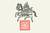 卫 | U | PHA | 西藏 | |
| 541 | 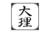 大理 | Dali | CDL | 中国 | |
| 542 | 彝 | Yi | CYI | 中国 | |
| 543 | 苗 | Miao | CMI | 中国 | |
| 544 | 闽 | Min | MIN | 中国 | |
| 545 | 越 | Yue | YUE | 中国 | |
| 546 | 蜀 | Shu | SHU | 中国 | |
| 547 | 宁 | Ning | NNG | 中国 | |
| 548 | 楚 | Chu | CHC | 中国 | |
| 549 | 唐 | Tang | TNG | 中国 | |
| 550 | 吴 | Wu | WUU | 中国 | |
| 551 | 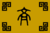 齐 | Qi | QIC | 中国 | |
| 552 | 燕 | Yan | YAN | 中国 | |
| 553 | 晋 | Jin | JIN | 中国 | |
| 554 | 梁 | Liang | LNG | 中国 | |
| 555 | 秦 | Qin | QIN | 中国 | |
| 556 | 淮 | Huai | HUA | 中国 | |
| 557 | 长生 | Changsheng | CGS | 中南 | |
| 558 | 俾路支斯坦 | Baluchistan | BAL | 波斯 | |
| 559 | 孟加拉 | Bengal | BNG | 印度 | |
| 560 | Bijapur | BIJ | 印度 | ||
| 561 | 巴赫曼尼 | Bahmanis | BAH | 印度 | |
| 562 | Delhi | DLH | 印度 | 可成立（存在于1444年） | |
| 563 | 戈尔孔达 | Golkonda | GOC | 印度 | |
| 564 | 德干 | Deccan | DEC | 印度 | 可成立 |
| 565 | 马拉塔 | Marathas | MAR | 印度 | 可成立 |
| 566 | 莫卧儿 | Mughals | MUG | 印度 | 可成立 |
| 567 | 迈索尔 | Mysore | MYS | 印度 | |
| 568 | 毗奢耶那伽罗 | Vijayanagar | VIJ | 印度 | |
| 569 | 艾哈迈德纳格尔 | Ahmednagar | AHM | 印度 | |
| 570 | 阿萨姆 | Assam | ASS | 印度 | |
| 571 | 古吉拉特 | Gujarat | GUJ | 印度 | |
| 572 | 章普尔 | Jaunpur | JNP | 印度 | |
| 573 | 马杜赖 | Madurai | MAD | 印度 | |
| 574 | 摩腊婆 | Malwa | MLW | 印度 | |
| 575 | 马尔瓦尔 | Marwar | MAW | 印度 | |
| 576 | 梅瓦尔 | Mewar | MER | 印度 | |
| 577 | 木尔坦 | Multan | MUL | 印度 | |
| 578 | 那格浦尔 | Nagpur | NAG | 印度 | 可成立 |
| 579 | 尼泊尔 | Nepal | NPL | 印度 | 可成立 |
| 580 | 奥里萨 | Orissa | ORI | 印度 | 可成立（存在于1444年） |
| 581 | 旁遮普 | Punjab | PUN | 印度 | 可成立 / |
| 582 | 信德 | Sindh | SND | 印度 | |
| 583 | 贝拉尔 | Berar | BRR | 印度 | |
| 584 | 禅伽罗 | Jangladesh | JAN | 印度 | |
| 585 | 卡纳提克 | Carnatic | KRK | 印度 | |
| 586 | 加哈 | Garha | GDW | 印度 | |
| 587 | 迦贾德 | Garjat | GRJ | 印度 | |
| 588 | 瓜廖尔 | Gwalior | GWA | 印度 | |
| 589 | 敦达尔 | Dhundhar | DHU | 印度 | |
| 590 | 克什米尔 | Kashmir | KSH | 印度 | |
| 591 | 开拉迪 | Keladi | KLN | 印度 | |
| 592 | 坎德什 | Khandesh | KHD | 印度 | |
| 593 | 奥德 | Oudh | ODH | 印度 | |
| 594 | 维纳德 | Venad | VND | 印度 | |
| 595 | Calicut | MAB | 印度 | ||
| 596 | 梅瓦特 | Mewat | MEW | 印度 | |
| 597 | 巴罗达 | Baroda | BDA | 印度 | |
| 598 | 巴斯塔 | Bastar | BST | 印度 | |
| 599 | 不丹 | Bhutan | BHU | 西藏 | |
| 600 | Bundelkhand | BND | 印度 | ||
| 601 | 科特 | Kotte | CEY | 印度 | |
| 602 | 斋沙默尔 | Jaisalmer | JSL | 印度 | |
| 603 | 卡恰尔 | Kachar | KAC | 中南 | |
| 604 | 科奇 | Koch | KMT | 印度 | |
| 605 | 坎格拉 | Kangra | KGR | 印度 | |
| 606 | 喀奇 | Kutch | KAT | 印度 | |
| 607 | 科钦 | Kochin | KOC | 印度 | |
| 608 | 曼尼普尔 | Manipur | MLB | 中南 | |
| 609 | 哈多提 | Hadoti | HAD | 印度 | |
| 610 | 纳高尔 | Nagaur | NGA | 印度 | |
| 611 | 罗希尔坎德 | Rohilkhand | RMP | 印度 | |
| 612 | 拉达克 | Ladakh | LDK | 印度 | |
| 613 | 巴克尔根德 | Baghelkhand | BGL | 印度 | |
| 614 | 贾夫纳 | Jaffna | JFN | 印度 | |
| 615 | 伯蒂亚拉 | Patiala | PTA | 印度 | |
| 616 | 加瓦尔 | Garhwal | GHR | 印度 | |
| 617 | 昌达 | Chanda | CHD | 印度 | |
| 618 | 贾坎德 | Jharkhand | NGP | 印度 | |
| 619 | 哈卜尚 | Habsan | JAJ | 印度 | |
| 620 | Tirhut | TRT | 印度 | ||
| 621 | 雷瓦坎塔 | Rewa Kantha | CMP | 印度 | |
| 622 | 巴格拉纳 | Baglana | BGA | 印度 | |
| 623 | 特里普拉 | Tripura | TPR | 中南 | |
| 624 | 萨地亚 | Sadiya | SDY | 印度 | |
| 625 | 婆罗多 | Bharat | BHA | 印度 | 可成立 |
| 626 | 安得拉 | Andhra | YOR | 印度 | |
| 627 | Maldives | DGL | 印度 | ||
| 628 | 毗湿奴普尔 | Bishnupur | MBL | 印度 | |
| 629 | 锡金 | Sikkim | SKK | 印度 | |
| 630 | 伊达尔 | Idar | IDR | 印度 | |
| 631 | 恰拉瓦尔 | Jhalavad | JLV | 印度 | |
| 632 | 巴利塔纳 | Palitana | PTL | 印度 | |
| 633 | 纳瓦那加 | Navanagar | NVR | 印度 | |
| 634 | 拉杰果德 | Rajkot | RJK | 印度 | |
| 635 | 朱纳格特 | Junagarh | JGD | 印度 | |
| 636 | 博尔本德尔 | Porbandar | PRB | 印度 | |
| 637 | 卡林贾尔 | Kalinjar | PAN | 印度 | |
| 638 | 迦尔毗 | Kalpi | KLP | 印度 | |
| 639 | 萨姆巴尔普尔 | Sambalpur | SBP | 印度 | |
| 640 | 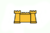 巴特那 | Patna | PTT | 印度 | |
| 641 | 拉坦普尔 | Ratanpur | RTT | 印度 | |
| 642 | 卡拉汉迪 | Kalahandi | KLH | 印度 | |
| 643 | 凯翁贾尔 | Keonhjar | KJH | 印度 | |
| 644 | 帕拉克米迪 | Parlakhimidi | PRD | 印度 | |
| 645 | 杰伊普尔 | Jeypore | JPR | 印度 | |
| 646 | 苏古贾 | Surguja | SRG | 印度 | |
| 647 | 康提 | Kandy | KND | 印度 | |
| 648 | 特伦甘纳 | Telingana | TLG | 印度 | |
| 649 | Kolathunad | KLT | 印度 | ||
| 650 | 丹格 | Dang | DNG | 印度 | |
| 651 | 多提 | Doti | DTI | 印度 | |
| 652 | 廓尔喀 | Gorkha | GRK | 印度 | |
| 653 | 久姆拉 | Jumla | JML | 印度 | |
| 654 | 林布旺 | Limbuwan | LWA | 印度 | |
| 655 | 马克万普尔 | Makwanpur | MKP | 印度 | |
| 656 | 色姆尔 | Sirmur | SRM | 印度 | |
| 657 | 加德满都 | Kathmandu | KTU | 印度 | |
| 658 | 库马翁 | Kumaon | KMN | 印度 | |
| 659 | 京吉 | Gingee | GNG | 印度 | |
| 660 | 坦焦尔 | Tanjore | TNJ | 印度 | |
| 661 | 西尔欣德 | Sirhind | SRH | 印度 | |
| 662 | 拉杰普塔纳 | Rajputana | RJP | 印度 | 可成立 |
| 663 | 巴尔 | Bar | BAR | 法兰西 | |
| 664 | 吕贝克 | Lübeck | HSA | 德意志 | |
| 665 | 斯摩棱斯克 | Smolensk | SMO | 东欧 | |
| 666 | Nizhny Novgorod | NZH | 俄罗斯 | ||
| 667 | 耶路撒冷 | Jerusalem | KOJ | 中东 | 可成立 |
| 668 | 马来亚 | Malaya | MSA | 东印度 | 可成立 |
| 669 | 印度斯坦 | Hindustan | HIN | 印度 | 可成立 |
| 670 | 阿布纳基 | Abenaki | ABE | 北美洲 | |
| 671 | Apache | APA | 北美洲 | ||
| 672 | 阿西尼博因 | Assiniboine | ASI | 北美洲 | |
| 673 | Blackfoot | BLA | 北美洲 | ||
| 674 | 卡多 | Caddo | CAD | 北美洲 | |
| 675 | 奇克索 | Chickasaw | CHI | 北美洲 | |
| 676 | 乔克托 | Choctaw | CHO | 北美洲 | |
| 677 | 夏延 | Cheyenne | CHY | 北美洲 | |
| 678 | 科曼奇 | Comanche | COM | 北美洲 | |
| 679 | 福克斯 | Fox | FOX | 北美洲 | |
| 680 | Illiniwek | ILL | 北美洲 | 可通过部落联盟成立 | |
| 681 | 莱纳佩 | Lenape | LEN | 北美洲 | |
| 682 | 莫希干 | Mahican | MAH | 北美洲 | |
| 683 | 米克马克 | Mikmaq | MIK | 北美洲 | |
| 684 | 迈阿密 | Miami | MMI | 北美洲 | |
| 685 | 纳瓦霍 | Navajo | NAH | 北美洲 | |
| 686 | 奥吉布瓦 | Ojibwe | OJI | 北美洲 | |
| 687 | 欧塞奇 | Osage | OSA | 北美洲 | |
| 688 | 渥太华 | Ottawa | OTT | 北美洲 | |
| 689 | 波尼 | Pawnee | PAW | 北美洲 | |
| 690 | 佩科特 | Pequot | PEQ | 北美洲 | |
| 691 | 皮马 | Pima | PIM | 北美洲 | |
| 692 | 波塔瓦托米 | Potawatomi | POT | 北美洲 | 可通过部落联盟成立（存在于1444年） |
| 693 | 波瓦坦 | Powhatan | POW | 北美洲 | |
| 694 | 普韦布洛 | Pueblo | PUE | 北美洲 | |
| 695 | 肖肖尼 | Shoshone | SHO | 北美洲 | |
| 696 | 苏族 | Sioux | SIO | 北美洲 | 可通过部落联盟成立（存在于1444年） |
| 697 | 萨斯奎汉诺克 | Susquehannock | SUS | 北美洲 | |
| 698 | 克里 | Cree | WCR | 北美洲 | |
| 699 | 阿伊尔 | Air | AIR | 西非 | |
| 700 | 博诺曼 | Bonoman | BON | 西非 | |
| 701 | 达荷美 | Dahomey | DAH | 西非 | |
| 702 | 达格邦 | Dagbon | DGB | 西非 | |
| 703 | Fulo | FUL | 西非 | ||
| 704 | 杰内 | Jenné | JNN | 西非 | |
| 705 | 卡诺 | Kano | KAN | 西非 | |
| 706 | 卡布 | Kaabu | KBU | 西非 | |
| 707 | 孔 | Kong | KNG | 西非 | |
| 708 | 卡齐纳 | Katsina | KTS | 西非 | |
| 709 | 莫西 | Mossi | MSI | 西非 | 可成立 |
| 710 | 努佩 | Nupe | NUP | 西非 | |
| 711 | 廷巴克图 | Timbuktu | TMB | 西非 | |
| 712 | Yao | YAO | 西非 | ||
| 713 | 雅滕加 | Yatenga | YAT | 西非 | |
| 714 | 马西纳 | Macina | ZAF | 西非 | 可成立 |
| 715 | 扎造 | Zazzau | ZZZ | 西非 | |
| 716 | 恩东戈 | Ndongo | NDO | 刚果 | |
| 717 | 阿瓦 | Ava | AVA | 中南 | |
| 718 | 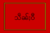 兴威 | Hsenwi | HSE | 中南 | |
| 719 | 柔佛 | Johor | JOH | 东印度 | |
| 720 | 吉打 | Kedah | KED | 东印度 | |
| 721 | 洛坤 | Ligor | LIG | 东印度 | |
| 722 | 孟潘 | Muang Phuan | MPH | 中南 | |
| 723 | 孟养 | Mong Yang | MYA | 中南 | |
| 724 | 霹雳 | Perak | PRK | 东印度 | |
| 725 | 孟卯 | Mong Mao | MMA | 中南 | |
| 726 | 孟拱 | Mong Kawng | MKA | 中南 | |
| 727 | 孟拜 | Mong Pai | MPA | 中南 | |
| 728 | Mong Nai | MNI | 中南 | ||
| 729 | 格礼 | Kale | KAL | 中南 | |
| 730 | Hsipaw | HSI | 中南 | ||
| 731 | 卑谬 | Prome | BPR | 中南 | |
| 732 | 楚科奇 | Chukchi | CHU | 西伯利亚 | |
| 733 | 霍京 | Khodynt | HOD | 西伯利亚 | |
| 734 | 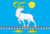 察夫楚万尼 | Chavchuveny | CHV | 西伯利亚 | |
| 735 | 堪察加 | Kamchadals | KMC | 西伯利亚 | |
| 736 | 布里亚特 | Buryatia | BRT | 西伯利亚 | |
| 737 | 阿拉帕霍 | Arapaho | ARP | 北美洲 | |
| 738 | 科利马 | Colima | CLM | 中美洲 | |
| 739 | 奇努克 | Chinook | CNK | 北美洲 | |
| 740 | 科科姆 | Cocomes | COC | 中美洲 | |
| 741 | 海达 | Haida | HDA | 北美洲 | |
| 742 | 伊察 | Itza | ITZ | 中美洲 | |
| 743 | 基切 | Kiche | KIC | 中美洲 | |
| 744 | 基奥瓦 | Kiowa | KIO | 北美洲 | |
| 745 | 米斯特克 | Mixtec | MIX | 中美洲 | |
| 746 | 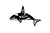 萨利什 | Salish | SAL | 北美洲 | |
| 747 | Tarascan | TAR | 中美洲 | ||
| 748 | 特拉帕内克 | Tlapanec | TLA | 中美洲 | |
| 749 | 特拉斯卡拉 | Tlaxcala | TLX | 中美洲 | |
| 750 | Totonac | TOT | 中美洲 | ||
| 751 | Wichita | WIC | 北美洲 | ||
| 752 | 休 | Xiu | XIU | 中美洲 | |
| 753 | 布兰邦岸 | Blambangan | BLM | 东印度 | |
| 754 | 布敦 | Buton | BTN | 东印度 | |
| 755 | 井里汶 | Cirebon | CRB | 东印度 | |
| 756 | 淡目 | Demak | DMK | 东印度 | |
| 757 | 帕迦鲁荣 | Pagarruyung | PGR | 东印度 | |
| 758 | 巴邻旁 | Palembang | PLB | 东印度 | |
| 759 | 八昔 | Pasai | PSA | 东印度 | |
| 760 | 锡亚克 | Siak | SAK | 东印度 | |
| 761 | 巽他 | Sunda | SUN | 东印度 | |
| 762 | 古泰 | Kutai | KUT | 东印度 | |
| 763 | 班贾尔 | Banjar | BNJ | 东印度 | |
| 764 | 兰芳 | Lanfang | LFA | 东印度 | 可成立 |
| 765 | 拉瑙 | Lanao | LNO | 东印度 | |
| 766 | 鲁乌 | Luwu | LUW | 东印度 | |
| 767 | 马京达瑙 | Maguindanao | MGD | 东印度 | |
| 768 | 特尔纳特 | Ternate | TER | 东印度 | |
| 769 | 蒂多雷 | Tidore | TID | 东印度 | |
| 770 | 马加斯 | Madyas | MAS | 东印度 | |
| 771 | 邦阿西楠 | Pangasinan | PGS | 东印度 | |
| 772 | Tondo | TDO | 东印度 | ||
| 773 | 马尼拉 | Maynila | MNA | 东印度 | |
| 774 | 宿务 | Cebu | CEB | 东印度 | |
| 775 | 武端 | Butuan | BTU | 东印度 | |
| 776 | 库斯科 | Cusco | CSU | 南美洲 | |
| 777 | 查尔查奇 | Calchaqui | CCQ | 南美洲 | |
| 778 | 马普切 | Mapuche | MPC | 南美洲 | |
| 779 | 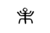 穆伊斯卡 | Muisca | MCA | 南美洲 | |
| 780 | 基多 | Quito | QTO | 南美洲 | |
| 781 | 卡哈马卡 | Cajamarca | CJA | 南美洲 | |
| 782 | 胡伊拉 | Huyla | HJA | 南美洲 | |
| 783 | 波蒂瓜拉 | Potiguara | PTG | 南美洲 | |
| 784 | 图皮尼金 | Tupiniquim | TPQ | 南美洲 | |
| 785 | 图皮南巴 | Tupinamba | TPA | 南美洲 | |
| 786 | 塔普亚 | Tapuia | TUA | 南美洲 | |
| 787 | 瓜拉尼 | Guarani | GUA | 南美洲 | |
| 788 | 查鲁亚 | Charrua | CUA | 南美洲 | |
| 789 | Wanka | WKA | 南美洲 | ||
| 790 | 查查波亚 | Chachapoya | CYA | 南美洲 | |
| 791 | 科拉 | Colla | CLA | 南美洲 | |
| 792 | 查卡 | Charca | CRA | 南美洲 | |
| 793 | 帕卡赫斯 | Pacajes | PCJ | 南美洲 | |
| 794 | 阿拉瓦克 | Arawak | ARW | 南美洲 | |
| 795 | 加勒比 | Carib | CAB | 南美洲 | |
| 796 | 依其马 | Ichma | ICM | 南美洲 | |
| 797 | 马特拉钦卡 | Matlatzinca | MAT | 中美洲 | |
| 798 | 科伊斯特拉瓦卡 | Coixtlahuaca | COI | 中美洲 | |
| 799 | 特奥蒂特兰 | Teotitlan | TEO | 中美洲 | |
| 800 | 哈利斯科 | Xalisco | XAL | 中美洲 | |
| 801 | 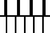 瓜马尔 | Guamar | GAM | 中美洲 | |
| 802 | 瓦斯特克 | Huastec | HST | 中美洲 | |
| 803 | 奇奇梅克 | Chichimeca | CCM | 中美洲 | |
| 804 | 奥托米 | Otomi | OTO | 中美洲 | |
| 805 | 约科坦 | Yokotan | YOK | 中美洲 | |
| 806 | Tzotzil | LAC | 中美洲 | ||
| 807 | 卡克奇克尔 | Kaqchikel | KAQ | 中美洲 | |
| 808 | 查克特马尔 | Chactemal | CTM | 中美洲 | |
| 809 | 齐亚 | Zia | KER | 北美洲 | |
| 810 | Zuni | ZNI | 中美洲 | ||
| 811 | 梅斯卡莱罗 | Mescalero | MSC | 北美洲 | |
| 812 | Lipan | LIP | 北美洲 | ||
| 813 | 乔尔蒂 | Chorti | CHT | 中美洲 | |
| 814 | 米斯基托 | Miskito | MIS | 中美洲 | |
| 815 | Tairona | TAI | 南美洲 | ||
| 816 | 坎佩奇 | Can Pech | CNP | 中美洲 | |
| 817 | 托纳拉 | Tonala | TON | 中美洲 | |
| 818 | 亚基 | Yaqui | YAQ | 北美洲 | |
| 819 | 约库特 | Yokuts | YKT | 北美洲 | |
| 820 | 新普罗维登斯 | New Providence | NSS | 加勒比海 | 由事件出现 |
| 821 | 皇家港 | Port Royal | PRY | 加勒比海 | 由事件出现 |
| 822 | 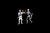 托尔图加 | Tortuga | TOR | 加勒比海 | 由事件出现 |
| 823 | 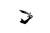 利贝塔蒂亚 | Libertatia | LIB | 南非 | 由事件出现 |
| 824 | 慕尼黑 | Munich | UBV | 德意志 | |
| 825 | 兰茨胡特 | Landshut | LBV | 德意志 | |
| 826 | 因戈尔施塔特 | Ingolstadt | ING | 德意志 | |
| 827 | 帕绍 | Passau | PSS | 德意志 | |
| 828 | 布雷根茨 | Bregenz | MBZ | 德意志 | |
| 829 | 康斯坦茨 | Konstanz | KNZ | 德意志 | |
| 830 | 罗滕堡 | Rothenburg | ROT | 德意志 | |
| 831 | 拜罗伊特 | Bayreuth | BYT | 德意志 | |
| 832 | 雷根斯堡 | Regensburg | REG | 德意志 | |
| 833 | 日内瓦 | Geneva | GNV | 德意志 | |
| 834 | 三同盟 | Three Leagues | TTL | 德意志 | |
| 835 | 奥波莱 | Opole | OPL | 东欧 | |
| 836 | 格沃古夫 | Glogow | GLG | 东欧 | |
| 837 | 博洛尼亚 | Bologna | BLG | 意大利 | |
| 838 | 帕多瓦 | Padua | PDV | 意大利 | |
| 839 | 萨卢佐 | Saluzzo | SZO | 意大利 | |
| 840 | 斯波莱托 | Spoleto | SPL | 意大利 | |
| 841 | Wolgast | WOL | 德意志 | ||
| 842 | 斯德丁 | Stettin | STE | 德意志 | |
| 843 | 戈斯拉尔 | Goslar | GOS | 德意志 | |
| 844 | 卢萨蒂亚 | Lusatia | SOR | 德意志 | |
| 845 | Rügen | RUG | 德意志 | ||
| 846 | 采列 | Cilli | CLI | 德意志 | |
| 847 | 黑塞哥维那 | Herzegovina | HRZ | 巴尔干 | |
| 848 | 特伦特 | Trent | TNT | 德意志 | |
| 849 | 贝格 | Berg | BRG | 德意志 | |
| 850 | 米尔豪森 | Mulhouse | MLH | 德意志 | |
| 851 | 班贝格 | Bamberg | BAM | 德意志 | |
| 852 | 鲁平 | Ruppin | RUP | 德意志 | |
| 853 | Lippe | LPP | 德意志 | ||
| 854 | 帕德博恩 | Paderborn | PAD | 德意志 | |
| 855 | 卡伦贝格 | Calenberg | CLB | 德意志 | |
| 856 | Donauwörth | DWT | 德意志 | ||
| 857 | Osnabrück | OSN | 德意志 | ||
| 858 | 维罗纳 | Verona | VRN | 意大利 | |
| 859 | 科堡 | Coburg | COB | 德意志 | |
| 860 | 洛塔林吉亚 | Lotharingia | LOT | 德意志 | 可成立 |
| 861 | 佩鲁贾 | Perugia | PGA | 意大利 | |
| 862 | 两西西里 | Two Sicilies | TTS | 意大利 | 可成立 |
| 863 | Franconia | FKN | 德意志 | 可成立 | |
| 864 | 施瓦本 | Swabia | SWA | 德意志 | 可成立 |
| 865 | 波尼 | Bone | BNE | 东印度 | |
| 866 | 贝劳 | Berau | BEU | 东印度 | |
| 867 | 三发 | Sambas | SMB | 东印度 | |
| 868 | Barus | BRS | 东印度 | ||
| 869 | 碟里 | Deli | DLI | 东印度 | |
| 870 | 占碑 | Jambi | JMB | 东印度 | |
| 871 | 彭亨 | Pahang | PAH | 东印度 | |
| 872 | 吉兰丹 | Kelantan | KEL | 东印度 | |
| 873 | 因陀罗补罗 | Indrapura | IND | 中南 | |
| 874 | 嘉莱 | Jarai | JAR | 中南 | |
| 875 | 埃地 | Rhade | RHA | 中南 | |
| 876 | 格贺 | Koho | KOH | 中南 | |
| 877 | 暹罗 | Siam | SIA | 中南 | 可成立 |
| 878 | 提维 | Tiwi | TIW | 澳大利亚 | |
| 879 | 拉拉基亚 | Larrakia | LAR | 澳大利亚 | |
| 880 | 雍古 | Yolngu | YOL | 澳大利亚 | |
| 881 | Yanuwa | YNU | 澳大利亚 | ||
| 882 | Awngthim | AWN | 澳大利亚 | ||
| 883 | 卡米勒罗伊 | Kamilaroi | GMI | 澳大利亚 | |
| 884 | 米安金 | Mianjin | MIA | 澳大利亚 | |
| 885 | 约拉 | Eora | EOR | 澳大利亚 | |
| 886 | 库林 | Kulin | KUL | 澳大利亚 | |
| 887 | 高纳 | Kaurna | KAU | 澳大利亚 | |
| 888 | 帕拉瓦 | Palawa | PLW | 澳大利亚 | |
| 889 | 伍伦杰里 | Wurundjeri | WRU | 澳大利亚 | |
| 890 | 农雅 | Nyoongah | NOO | 澳大利亚 | |
| 891 | 马尔加纳 | Malgana | MLG | 澳大利亚 | |
| 892 | 奥特亚罗瓦 | Aotearoa | AOT | 大洋洲 | 可成立 |
| 893 | 雅提阿瓦 | Ngati Awa | MAA | 大洋洲 | |
| 894 | 泰努伊 | Tainui | TAN | 大洋洲 | |
| 895 | 雅提卡胡伍努 | Ngati Kahungunu | TAK | 大洋洲 | |
| 896 | 雅提托阿 | Ngati Toa | TNK | 大洋洲 | |
| 897 | 雅提拉宜努伊 | Ngati Ranginui | TEA | 大洋洲 | |
| 898 | 雅普希 | Ngapuhi | TTT | 大洋洲 | |
| 899 | 怀塔哈 | Waitaha | WAI | 大洋洲 | |
| 900 | Hawai'i | UHW | 大洋洲 | 可成立 | |
| 901 | 夏威夷 | Hawai'i | HAW | 大洋洲 | |
| 902 | 毛伊 | Maui | MAU | 大洋洲 | |
| 903 | O'ahu | OAH | 大洋洲 | ||
| 904 | Kaua'i | KAA | 大洋洲 | ||
| 905 | 汤加 | Tonga | TOG | 大洋洲 | |
| 906 | Samoa | SAM | 大洋洲 | ||
| 907 | 斐济 | Viti | VIT | 大洋洲 | 可成立 |
| 908 | 维提 | Viti Levu | VIL | 大洋洲 | |
| 909 | 瓦努阿 | Vanua Levu | VNL | 大洋洲 | |
| 910 | 劳 | Lau | LAI | 大洋洲 | |
| 911 | 奥尔塔马霍 | Altamaha | ALT | 北美洲 | |
| 912 | 伊奇西 | Ichisi | ICH | 北美洲 | |
| 913 | 科菲塔切基 | Cofitachequi | COF | 北美洲 | |
| 914 | 乔阿拉 | Joara | JOA | 北美洲 | |
| 915 | 埃托瓦 | Etowah | ETO | 北美洲 | |
| 916 | 萨塔波 | Satapo | SAT | 北美洲 | |
| 917 | 奇亚哈 | Chiaha | CIA | 北美洲 | |
| 918 | 库萨 | Coosa | COO | 北美洲 | |
| 919 | 阿比卡 | Abihka | ABI | 北美洲 | |
| 920 | 考维塔 | Coweta | COW | 北美洲 | |
| 921 | 纳奇兹 | Natchez | NTZ | 北美洲 | |
| 922 | 卡斯基 | Casqui | CAQ | 北美洲 | |
| 923 | Pacaha | PCH | 北美洲 | ||
| 924 | 基斯基斯 | Quizquiz | QUI | 北美洲 | |
| 925 | 奇斯卡 | Chisca | CCA | 北美洲 | |
| 926 | 阿塔哈奇 | Atahachi | ATA | 北美洲 | |
| 927 | Kasihta | KSI | 北美洲 | ||
| 928 | 奥内奥塔 | Oneota | OEO | 北美洲 | |
| 929 | 阿尼尔科 | Anilco | ANL | 北美洲 | |
| 930 | 纳基托什 | Natchitoches | NTC | 北美洲 | |
| 931 | 哈西奈 | Hasinai | HNI | 北美洲 | |
| 932 | 莫霍克 | Mohawk | MOH | 北美洲 | |
| 933 | 奥奈达 | Oneida | ONE | 北美洲 | |
| 934 | 奥农多加 | Onondaga | ONO | 北美洲 | |
| 935 | 卡尤加 | Cayuga | CAY | 北美洲 | |
| 936 | 塞尼卡 | Seneca | SEN | 北美洲 | |
| 937 | 塔洪塔恩拉特 | Tahontaenrat | TAH | 北美洲 | |
| 938 | 阿蒂格纳万坦 | Attignawantan | ATT | 北美洲 | |
| 939 | 阿蒂格内农纳哈克 | Attigneenongnahac | AGG | 北美洲 | |
| 940 | 阿蒂万达伦 | Attiwandaron | ATW | 北美洲 | |
| 941 | 阿伦达罗嫩 | Arendaronon | ARN | 北美洲 | |
| 942 | Tionontate | TIO | 北美洲 | ||
| 943 | 奥雪来嘉 | Osheaga | OSH | 北美洲 | |
| 944 | 斯塔达科纳 | Stadacona | STA | 北美洲 | |
| 945 | 伊利 | Erie | ERI | 北美洲 | |
| 946 | 文罗 | Wenro | WEN | 北美洲 | |
| 947 | 塔斯卡罗拉 | Tuscarora | TSC | 北美洲 | |
| 948 | 奥凯奥温盖 | Ohkay Owingeh | OHK | 北美洲 | |
| 949 | 伊斯莱塔 | Isleta | ISL | 北美洲 | |
| 950 | 阿科马 | Acoma | ACO | 北美洲 | |
| 951 | 卡霍基亚 | Cahokia | CAO | 北美洲 | |
| 952 | 皮奥里亚 | Peoria | PEO | 北美洲 | |
| 953 | Kaskaskia | KSK | 北美洲 | ||
| 954 | 佩诺布斯科特 | Penobscot | PEN | 北美洲 | |
| 955 | 马勒西特 | Maliseet | MLS | 北美洲 | |
| 956 | 内希亚乌 | Nehiyaw | NEH | 北美洲 | |
| 957 | 纳卡韦 | Nakawe | NAK | 北美洲 | |
| 958 | 哈萨韦凯拉 | Hathawekela | HWK | 北美洲 | |
| 959 | 查拉高萨 | Chalaghawtha | CLG | 北美洲 | |
| 960 | 基斯波科 | Kispoko | KSP | 北美洲 | |
| 961 | 米西索加 | Mississage | MSG | 北美洲 | |
| 962 | 维奇耶纳 | Wichiyena | WCY | 北美洲 | |
| 963 | 拉科塔 | Lakota | LAK | 北美洲 | |
| 964 | 因努 | Innu | INN | 北美洲 | |
| 965 | 万帕诺亚格 | Wampanoag | WAM | 北美洲 | |
| 966 | 阿尔冈昆 | Algonquin | AGQ | 北美洲 | |
| 967 | 扬马延 | Jan Mayen | JMN | – | 特殊国家（仅能通过控制台生成） |
| 968 | Roman Empire | ROM | 意大利 | 可成立 | |
| 969 | 智械 | Synthetics | SYN | – | 特殊国家（仅能通过控制台生成） |
| 970 | 以色列 | Israel | ISR | 中东 | 可成立 |
| 971 | 埃兰沙赫尔 | Eranshahr | ERS | 波斯 | 可通过事件成立 |
| – | 约姆斯维京 | Jomsvikings | JOM | – | 特殊国家（由CK2转档方可使用） |
| – | 阿萨辛 | Hashashin | HAH | – | 特殊国家（由CK2转档方可使用） |
| – | 圣殿骑士团 | Knights Templar | TEM | – | 特殊国家（由CK2转档方可使用） |
| – | 特拉帕兰达 | Trapalanda | TRL | 北美洲 | 特殊国家（由CK2转档方可使用） |